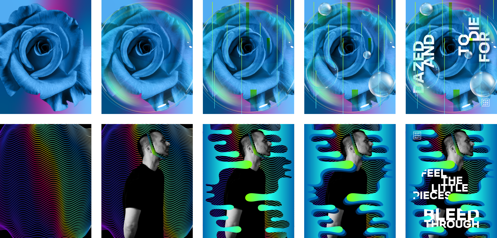

Traverse the gap between the world at large and the world in our hands.
Or, more simply, use technology to transfigure printed pieces into a digital experience with some techno-alchemy. In this case, nine posters will be reinterpreted.
Pop culture extremist,
genre existentialist,
digital alchemist.
Obsessed by narrative and aesthetic design,
fueled by hot tea and cold press coffee,
schooled by the international Swiss Haas of style.
Self admitted logophile,
simple-solution focused ethos,
flamboyantly restrained hand.
Transfiguration was the other half of this project, but how would I go about it? Something I was hoping to try a year prior was augmented reality. Yes, the same technology that helped you catch Pokemon on your daily walks, I wanted to use to change your viewing experience of these posters.
But I knew nothing about AR, but had an idea of what it would take to accomplish, and there were two artists on Instagram that already achieved what I was striving for, so I knew it could be done.
After the demo, I only had creative overwhelm and a lack of inspiration. Or more specifically, panic at creating something that was worthy of this program’s finale. I didn’t want to go out like Game of Thrones (JK). I had too many ideas, and no time to think them all through. My original plan was to use my own words to create a poem-like narrative that the visuals would support, and act more like a coffee table book with an AR extension. The above example is the first place I started, and, ultimately, ended. Instead of spending time trying to make it work, I decided to scrap the concept, and use the title of the demo, Supernaut, as the new starting point.
SUPERNAUT
VIII • VI • MMXIX
I simplified my scope. Instead of working on a larger narrative in book form, I focused on 9 posters. I set some parameters for myself, knowing that I could break them once I started getting into the flow. In this case, the structure helped make this project seem less overwhelming.
I also looked back at my previous work from this program. I had the idea to incorporate elements into these posters that could represent a subtle remix and endcap for the last 32 months.
Here are two of the posters broken out by layers. This was my process, for the most part. I would start with an idea or element, then determine a color palette, and add elements until I felt it was finished. The whole time I was building these, I was coming up with ideas on what would happen in AR, so layering and animated objects were important. Depth and complexity were also important, so I ended up searched through all the different tutorials I have saved over the years but never had a chance to actually use them.
Just a quick note on why I chose to do 9 posters... which seems like a random decision, but actually, it was based off numerology. 9 has a lot of meaning attached to it, but what I found most meaningful was how it represents the final stages of growth, initiation, and graduation. A perfect way to close out this program.
Another quick note on an aspect I was focused on for this project... user engagment is a factor that I strive for in my work. Followers, views, and likes are great, but when users can connect, engage, and experience emotions when engaged, it enhances their connection to the project, product, campaign, etc. This is way I originally wanted to incorporate augmented reality into this project. I wanted the viewers to have to take action in order to see the full design.
After doing research on augmented reality companies that I could work with for this project, I ended up with five that could really achieve what I was looking to do; which was a mix of animations and layers jumping off the canvas towards the view. Particular, Blippar, Markit AR, UmbrellAR, and Spark.
Unfortunately, 3 of these companies never got back to me, and the account represenative for Particular was on summer break, so the conversation didn’t even get to price. Blippar ended up being too expensive to justify, so I had to figure out a solution as soon as humanly possible, because this project was due in one week...
Once again I found myself at a dead end, but at this point in the project, that couldn't happen. This was it. I had a week left before I turned this in. AR was too expensive for what I would be able to do with it, so that was off the table, but I still wanted to pay off my original brief. And then my classmate Meg Alles sent me a post on Instagram from Ian Barnard (@ianbarnard) featuring a interactive parallax poster.
This was the solution. (Insert internal screams of joy and relief)
It still fulfilled on my original brief, but the end result was soley in my hands. No more waiting on account reps to get back to me. No more having to worry about price.
I learned that Ian Barnard had learned this from another designer, Jarom Vogel. When I went to Jarom Instagram account, I saw that he teaches a Skillshare for this exact technique. Mercury in Retrograde may have messed with the first couple weeks of this project, but this was the turning point. With a week left, I jumped in and learned how to transform my designs into interactive parallax posters with javascript.